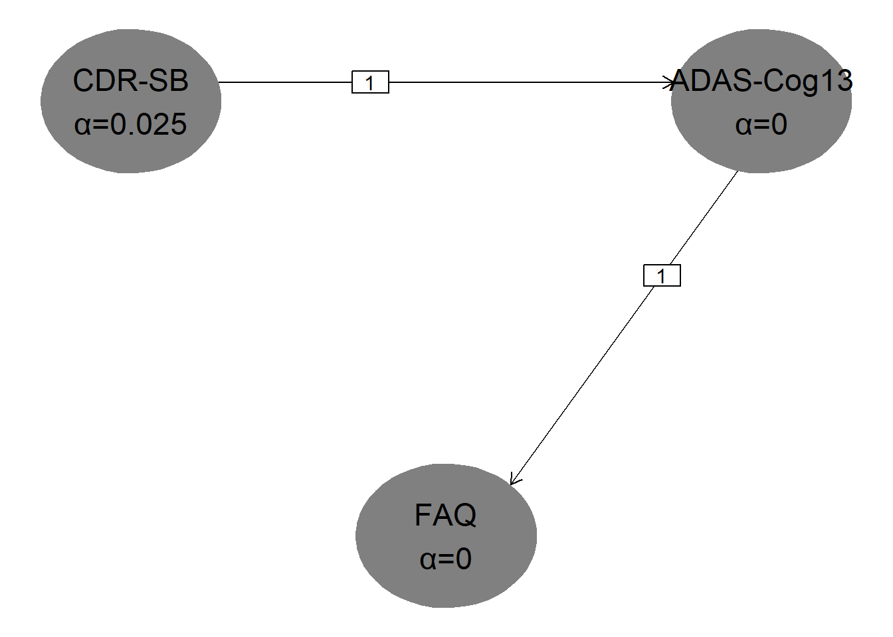
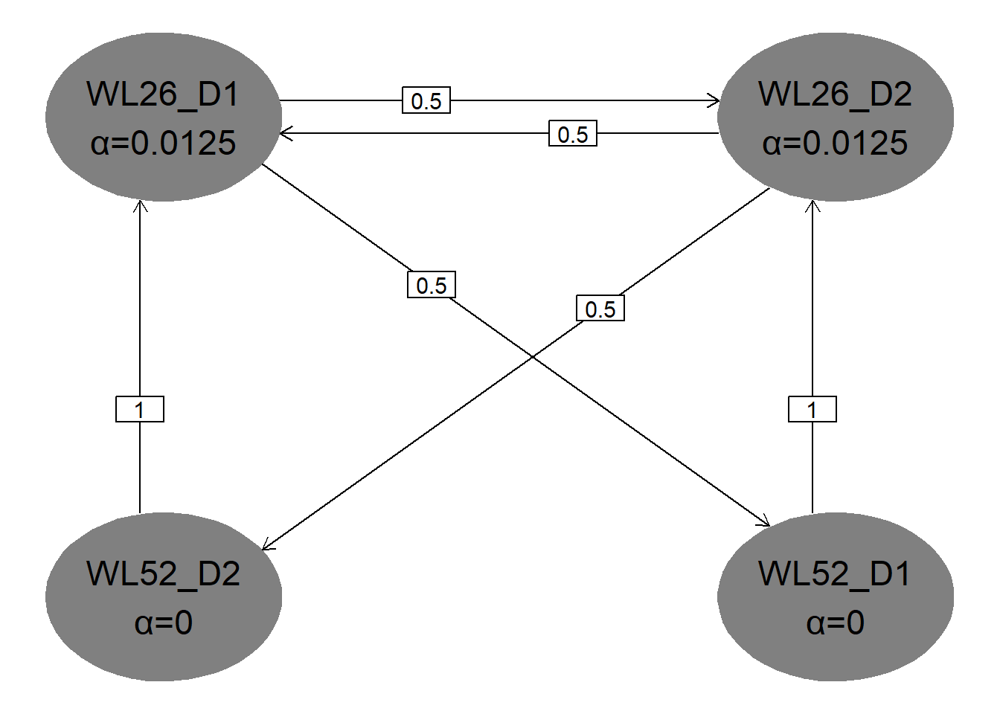
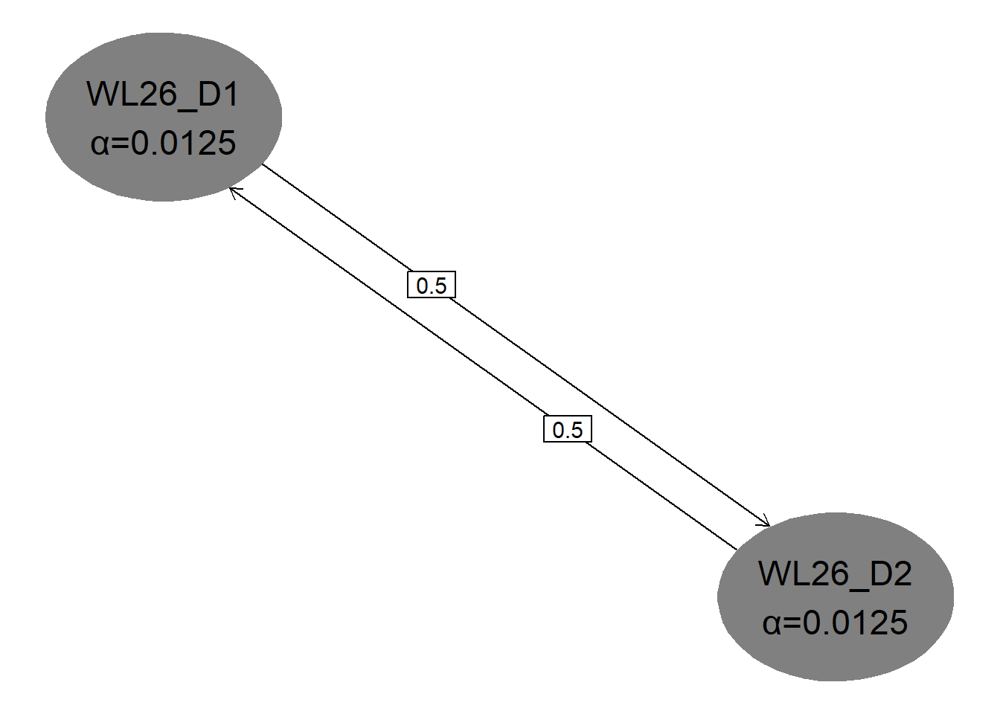

# packages
library(MASS)
library(gMCPLite) # graphical multiple testing procedures
library(rpact) # group-sequential and adaptive trials
# Source functions for calculating bias-adjusted estimators in GS trials via simulation
source("biasCorrectGroupSeqSurvival.r")Code supporting the examples in the paper Communicating results in trials with multiple hypotheses or adaptive design features
1 Background
Code for the paper Communicating results in trials with multiple hypotheses or adaptive design features, Asikanius et al. (2026), written by an author team of statisticians from regulators, academia, and industry.
2 Purpose of this document
This R Quarto file provides easy accessible code to compute all the quantities in the paper. The github repository where this document is hosted is available here.
3 Setup
Example 1: A randomized trial in early Alzheimer’s disease with hierarchical testing
In this section we reproduce numbers in Table 1 of the paper.
# ----------------------------------------
# Unadjusted trial results
# ----------------------------------------
alpha <- 0.05
za <- qnorm(1 - alpha / 2)
endpoints <- c("CDR-SB", "ADAS-Cog13", "FAQ")
estimate <- c(-0.4, -1.3, -1.1)
se <- c(0.6, 3, 1.6) / (2 * za)
# one-sided p-value
p_values_less <- pnorm(estimate / se)
p_values_greater <- 1 - p_values_less
# per comparison two-sided CI and p-values
data.frame(
endpoints,
estimate,
ci_lower_unadj = estimate - za * se,
ci_upper_unadj = estimate + za * se,
p_value_2sided_unadj = 2 * pmin(p_values_greater, p_values_less),
p_value_2sided_unadj_r = round(2 * pmin(p_values_greater, p_values_less), 2)
) endpoints estimate ci_lower_unadj ci_upper_unadj p_value_2sided_unadj
1 CDR-SB -0.4 -0.7 -0.1 0.008967640
2 ADAS-Cog13 -1.3 -2.8 0.2 0.089387892
3 FAQ -1.1 -1.9 -0.3 0.007039909
p_value_2sided_unadj_r
1 0.01
2 0.09
3 0.01# ----------------------------------------
# Adjusted trial results
# ----------------------------------------
# Define transition matrix and weights for hierarchical testing
# (as a graphical multiple comparison procedure)
transitions <- rbind(
c(0, 1, 0),
c(0, 0, 1),
c(0, 0, 0)
)
weights <- c(1, 0, 0)
hierarchical_graph <- matrix2graph(transitions, weights)
# ----------------------------------------
# plot graph (one-sided at level 0.025)
# ----------------------------------------
hGraph(
nHypotheses = 3,
nameHypotheses = endpoints,
alphaHypotheses = c(alpha / 2, 0, 0),
m = transitions
)
# ----------------------------------------
# adjusted p-values
# ----------------------------------------
# direction "greater"
result_greater <- gMCP(
graph = hierarchical_graph,
pvalues = p_values_greater,
alpha = alpha / 2
)
# one-sided
result_greater@adjPValues H1 H2 H3
0.9955162 0.9955162 0.9964800 # direction "less"
result_less <- gMCP(
graph = hierarchical_graph,
pvalues = p_values_less,
alpha = alpha / 2
)
# one-sided
result_less@adjPValues H1 H2 H3
0.00448382 0.04469395 0.04469395 # ----------------------------------------
# simultaneous confidence intervals
# ----------------------------------------
# One-sided 97.5% CI, direction "greater"
ci_results_greater <- simConfint(
object = hierarchical_graph,
pvalues = p_values_greater,
confint = "normal",
estimates = estimate,
alpha = alpha / 2,
alternative = "greater"
)
ci_results_greater lower bound estimate upper bound
[1,] -0.7 -0.4 Inf
[2,] -Inf -1.3 Inf
[3,] -Inf -1.1 Inf# One-sided 97.5% CI, direction "less"
ci_results_less <- simConfint(
object = hierarchical_graph,
pvalues = p_values_less,
confint = "normal",
estimates = estimate,
alpha = alpha / 2,
alternative = "less"
)
ci_results_less lower bound estimate upper bound
[1,] -Inf -0.4 0.0
[2,] -Inf -1.3 0.2
[3,] -Inf -1.1 Inf# Unadjusted two-sided CI (intersection of the two one-sided CI)
# and two-sided p-value
data.frame(
endpoints,
estimate = estimate,
ci_lower_adj = ci_results_greater[, "lower bound"],
ci_upper_adj = ci_results_less[, "upper bound"],
p_value_2sided_adj = 2 * pmin(result_greater@adjPValues, result_less@adjPValues),
p_value_2sided_adj_r = round(2 * pmin(result_greater@adjPValues,
result_less@adjPValues), 2)
) endpoints estimate ci_lower_adj ci_upper_adj p_value_2sided_adj
H1 CDR-SB -0.4 -0.7 0.0 0.00896764
H2 ADAS-Cog13 -1.3 -Inf 0.2 0.08938789
H3 FAQ -1.1 -Inf Inf 0.08938789
p_value_2sided_adj_r
H1 0.01
H2 0.09
H3 0.09Example 2: A group-sequential trial with hierarchical testing in oncology
In this section we reproduce numbers in Table 2 of the paper.
Results for progression-free survival (PFS)
Trial design
# ----------------------------------------
# primary endpoint: PFS
# ----------------------------------------
# 230 events total -> 90% power for HR=0.65
# IA after 152 events (66%);
# observed at IA:
# - log(HR) = log(0.61)
# - SE = sqrt(4 / 152)
alpha <- 0.05
za <- qnorm(1 - alpha / 2)
beta <- 0.1
d_int <- 152
d_fin <- 230
n <- 500
hr <- 0.65
# Group-sequential design
infoRates1 <- c(d_int / d_fin, 1)
d1 <- getDesignGroupSequential(
informationRates = infoRates1,typeOfDesign = "asOF",
sided = 2, alpha = alpha, beta = beta)
summary(d1)Sequential analysis with a maximum of 2 looks (group sequential design)
O’Brien & Fleming type alpha spending design, two-sided overall significance level 5%, power 90%, undefined endpoint, inflation factor 1.0114, ASN H1 0.8224, ASN H01 0.9717, ASN H0 1.0074.
| Stage | 1 | 2 |
|---|---|---|
| Planned information rate | 66.1% | 100% |
| Cumulative alpha spent | 0.0117 | 0.0500 |
| Stage levels (two-sided) | 0.0117 | 0.0464 |
| Efficacy boundary (z-value scale) | 2.522 | 1.992 |
| Cumulative power | 0.5509 | 0.9000 |
s1 <- getPowerSurvival(
d1, maxNumberOfSubjects = n, maxNumberOfEvents = d_fin,
median1 = 24, hazardRatio = hr)
summary(s1)Power calculation for a survival endpoint
Sequential analysis with a maximum of 2 looks (group sequential design), two-sided overall significance level 5%. The results were calculated for a two-sample logrank test, H0: hazard ratio = 1, H1: hazard ratio = 0.65, control median(2) = 15.6, maximum number of subjects = 500, maximum number of events = 230, accrual time = 12, accrual intensity = 41.7.
| Stage | 1 | 2 |
|---|---|---|
| Planned information rate | 66.1% | 100% |
| Cumulative alpha spent | 0.0117 | 0.0500 |
| Stage levels (two-sided) | 0.0117 | 0.0464 |
| Efficacy boundary (z-value scale) | 2.522 | 1.992 |
| Lower efficacy boundary (t) | 0.664 | 0.769 |
| Upper efficacy boundary (t) | 1.506 | 1.300 |
| Cumulative power | 0.5530 | 0.9012 |
| Number of subjects | 500.0 | 500.0 |
| Expected number of subjects under H1 | 500.0 | |
| Cumulative number of events | 152.0 | 230.0 |
| Expected number of events under H1 | 186.9 | |
| Analysis time | 16.19 | 23.27 |
| Expected study duration under H1 | 19.36 | |
| Exit probability for efficacy (under H0) | 0.0117 | |
| Exit probability for efficacy (under H1) | 0.5530 |
Legend:
- (t): treatment effect scale
Naive inference
# ----------------------------------------
# naive inference
# ----------------------------------------
# observed at interim
log_est1 <- log(0.61)
se1 <- sqrt(4 / 152)
log_est1_lower <- log_est1 - za * se1
log_est1_upper <- log_est1 + za * se1
# estimate and CI
round(exp(c(log_est1, log_est1_lower, log_est1_upper)) , 2)[1] 0.61 0.44 0.84# 2-sided p-value
round(2 * pnorm(log_est1 / se1) , 3)[1] 0.002Inference based on stagewise ordering
# ----------------------------------------
# Median unbiased estimator, CI, p-value
# all based on stage-wise ordering
# repeated CI and p-value with rpact
# ----------------------------------------
#
# !! For rpact v4.30, the "Final p-value" (i.e. p-value based on stage-wise ordering)
# is reported as 0.9988 in the output below but it should rather be
# 1-0.9988 = 0.0012 instead.
# [See https://github.com/rpact-com/rpact/issues/114 which will hopefully be
# fixed soon]
r1 <- getDataSet(
overallEvents = c(d_int),
overallLogRanks = c(log_est1 / se1),
overallAllocationRatio = 1
)
adj_r1 <- getAnalysisResults(
design = d1, dataInput = r1
)
summary(adj_r1)Analysis results for a survival endpoint
Sequential analysis with 2 looks (group sequential design), two-sided overall significance level 5%. The results were calculated using a two-sample logrank test. H0: hazard ratio = 1 against H1: hazard ratio != 1.
| Stage | 1 | 2 |
|---|---|---|
| Planned information rate | 66.1% | 100% |
| Cumulative alpha spent | 0.0117 | 0.0500 |
| Stage levels (two-sided) | 0.0117 | 0.0464 |
| Efficacy boundary (z-value scale) | 2.522 | 1.992 |
| Cumulative effect size | 0.610 | |
| Overall test statistic | -3.047 | |
| Overall p-value | 0.9988 | |
| Test action | reject and stop | |
| Conditional rejection probability | 0.7977 | |
| 95% repeated confidence interval | [0.405; 0.918] | |
| Repeated p-value | 0.0165 | |
| Final p-value | 0.9988 | |
| Final confidence interval | [0.444; 0.838] | |
| Median unbiased estimate | 0.610 |
Unconditional (global) bias adjusted estimator via simulation
boundaryEffectScaleLower <- s1$criticalValuesEffectScaleLower[,1]
boundaryEffectScaleUpper <- s1$criticalValuesEffectScaleUpper[,1]
nsim <- 1E6
seed <- 12
# estimator
uncond_est <- biasCorrectGroupSeqSurvival(
hazardRatioMLE = exp(log_est1),
stopstage = 1,
type = "global",
n = nsim,
informationRates = infoRates1,
maxNumberOfEvents = d_fin,
allocationRatioPlanned = 1,
boundaryEffectScaleLower = boundaryEffectScaleLower,
boundaryEffectScaleUpper = boundaryEffectScaleUpper,
seed = seed)
# crude lower CI by simply adjusting the naive lower CI
# (as proposed by Pinheiro & deMets)
uncond_low <- biasCorrectGroupSeqSurvival(
hazardRatioMLE = exp(log_est1_lower),
stopstage = 1,
type = "global",
n = nsim,
informationRates = infoRates1,
maxNumberOfEvents = d_fin,
allocationRatioPlanned = 1,
boundaryEffectScaleLower = boundaryEffectScaleLower,
boundaryEffectScaleUpper = boundaryEffectScaleUpper,
seed = seed)
# crude upper CI by simply adjusting the naive upper CI
# (as proposed by Pinheiro & deMets)
uncond_up <- biasCorrectGroupSeqSurvival(
hazardRatioMLE = exp(log_est1_upper),
stopstage = 1,
type = "global",
n = nsim,
informationRates = infoRates1,
maxNumberOfEvents = d_fin,
allocationRatioPlanned = 1,
boundaryEffectScaleLower = boundaryEffectScaleLower,
boundaryEffectScaleUpper = boundaryEffectScaleUpper,
seed = seed)
round(c(uncond_est, uncond_low, uncond_up), 2)[1] 0.62 0.44 0.84Conditional bias adjusted estimator via simulation
# estimator
cond_est <- biasCorrectGroupSeqSurvival(
hazardRatioMLE = exp(log_est1),
stopstage = 1,
type = "stagewise",
n = nsim,
informationRates = infoRates1,
maxNumberOfEvents = d_fin,
allocationRatioPlanned = 1,
boundaryEffectScaleLower = boundaryEffectScaleLower,
boundaryEffectScaleUpper = boundaryEffectScaleUpper,
seed = seed)
# crude lower CI by simply adjusting the naive lower CI
cond_low <- biasCorrectGroupSeqSurvival(
hazardRatioMLE = exp(log_est1_lower),
stopstage = 1,
type = "stagewise",
n = nsim,
informationRates = infoRates1,
maxNumberOfEvents = d_fin,
allocationRatioPlanned = 1,
boundaryEffectScaleLower = boundaryEffectScaleLower,
boundaryEffectScaleUpper = boundaryEffectScaleUpper,
seed = seed)
# crude upper CI by simply adjusting the naive upper CI
cond_up <- biasCorrectGroupSeqSurvival(
hazardRatioMLE = exp(log_est1_upper),
stopstage = 1,
type = "stagewise",
n = nsim,
informationRates = infoRates1,
maxNumberOfEvents = d_fin,
allocationRatioPlanned = 1,
boundaryEffectScaleLower = boundaryEffectScaleLower,
boundaryEffectScaleUpper = boundaryEffectScaleUpper,
seed = seed)
round(c(cond_est, cond_low, cond_up), 2)[1] 0.78 0.45 0.98Results for overall survival (OS)
# ----------------------------------------
# secondary endpoint: OS
# ----------------------------------------
#
# 233 events -> 80% power for HR = 0.69
# IA at 50% and 75% IF
# Results for IA after 117 events (50%):
# log(HR) = log(0.67)
# SE = sqrt(4 / 117)
# ----------------------------------------
# trial design
# ----------------------------------------
alpha <- 0.05
za <- qnorm(1 - alpha / 2)
beta <- 0.2
hr_os <- 0.69
infoRates2 <- c(0.5, 0.75, 1)
# number of events
d2 <- getDesignGroupSequential(informationRates = infoRates2,
typeOfDesign = "asOF", sided = 2,
alpha = alpha)
ss_os <- getSampleSizeSurvival(design = d2, median2 = 100,
hazardRatio = hr_os,
maxNumberOfSubjects = 2000)
# number of events
d_os <- ceiling(as.vector(ss_os$eventsPerStage))
d_os[1] 117 175 233d_int_os <- d_os[1]
# ----------------------------------------
# naive inference
# ----------------------------------------
log_est2 <- log(0.67)
se2 <- sqrt(4 / d_int_os)
# estimate and CI
round(exp(log_est2 + c(0, -1, 1) * za * se2) , 2)[1] 0.67 0.47 0.96# 2-sided p-value
round(2 * pnorm(log_est2/se2) , 2)[1] 0.03# ----------------------------------------
# Repeated CI and p-value
# ----------------------------------------
r2 <- getDataSet(
overallEvents = c(d_int_os),
overallLogRanks = c(log_est2 / se2),
overallAllocationRatio = 1
)
adj_r2 <- getAnalysisResults(
design = d2,
dataInput = r2
)
summary(adj_r2)Analysis results for a survival endpoint
Sequential analysis with 3 looks (group sequential design), two-sided overall significance level 5%. The results were calculated using a two-sample logrank test. H0: hazard ratio = 1 against H1: hazard ratio != 1.
| Stage | 1 | 2 | 3 |
|---|---|---|---|
| Planned information rate | 50% | 75% | 100% |
| Cumulative alpha spent | 0.0031 | 0.0193 | 0.0500 |
| Stage levels (two-sided) | 0.0031 | 0.0183 | 0.0440 |
| Efficacy boundary (z-value scale) | 2.963 | 2.359 | 2.014 |
| Cumulative effect size | 0.670 | ||
| Overall test statistic | -2.166 | ||
| Overall p-value | 0.9848 | ||
| Test action | continue | ||
| Conditional rejection probability | 0.2936 | ||
| 95% repeated confidence interval | [0.387; 1.159] | ||
| Repeated p-value | 0.1719 |
Example 3: A three-arm trial of two active doses versus placebo in adults with obesity
In this section we reproduce numbers in Table 3 of the paper.
3.1 Unadjusted trial results
# ----------------------------------------
# Unadjusted trial results
# ----------------------------------------
alpha <- 0.05
za <- qnorm(1 - alpha / 2)
endpoints <- c("WL26_D1", "WL26_D2", "WL52_D1", "WL52_D2")
estimate <- c(-10, -5.1, -15, -15)
se <- c(10, 10, 10, 10) / (2 * za)
# one-sided p-value
p_values_less <- pnorm(estimate / se)
p_values_greater <- 1 - p_values_less
# per comparison two-sided CI and p-values
data.frame(
endpoints,
estimate,
ci_lower_unadj = estimate - za * se,
ci_upper_unadj = estimate + za * se,
p_value_2sided_adj = 2 * pmin(p_values_greater, p_values_less),
p_value_2sided_adj_r =
format.pval(2 * pmin(p_values_greater, p_values_less), 2)
) endpoints estimate ci_lower_unadj ci_upper_unadj p_value_2sided_adj
1 WL26_D1 -10.0 -15.0 -5.0 8.857544e-05
2 WL26_D2 -5.1 -10.1 -0.1 4.559069e-02
3 WL52_D1 -15.0 -20.0 -10.0 4.105344e-09
4 WL52_D2 -15.0 -20.0 -10.0 4.105344e-09
p_value_2sided_adj_r
1 8.9e-05
2 0.046
3 4.1e-09
4 4.1e-093.2 Results including data of Week 26 & 52
# ----------------------------------------
# Adjusted trial results
# including week 26 & 52 data
# ----------------------------------------
# transition matrix and weights of the graphical multiple comparisons procedure
transitions <- rbind(
c(0, 0.5, 0.5, 0),
c(0.5, 0, 0, 0.5),
c(0, 1, 0, 0),
c(1, 0, 0, 0)
)
weights <- c(0.5, 0.5, 0, 0)
three_arm_graph <- matrix2graph(transitions, weights)
# plot graph (one-sided at overall level 0.025)
alpha <- 0.025
hGraph(
nHypotheses = 4,
nameHypotheses = endpoints,
alphaHypotheses = c(alpha / 2, alpha / 2, 0, 0),
m = transitions
)
# ----------------------------------------
# adjusted p-values
# ----------------------------------------
# direction "greater"
result_greater <- gMCP(
graph = three_arm_graph,
pvalues = p_values_greater,
alpha = alpha
)
# direction "less"
result_less <- gMCP(
graph = three_arm_graph,
pvalues = p_values_less,
alpha = alpha
)
# ----------------------------------------
# simultaneous confidence intervals
# ----------------------------------------
# One-sided 97.5% CI
# direction "greater"
ci_results_greater <- simConfint(
object = three_arm_graph,
pvalues = p_values_greater,
confint = "normal",
estimates = estimate,
alpha = alpha,
alternative = "greater"
)
# One-sided 97.5% CI
# direction "less"
ci_results_less <- simConfint(
object = three_arm_graph,
pvalues = p_values_less,
confint = "normal",
estimates = estimate,
alpha = alpha,
alternative = "less"
)
# ----------------------------------------
# unadjusted two-sided CI (intersection of the two one-sided CI)
# and p-values, all two-sided
# ----------------------------------------
data.frame(
endpoints,
estimate = estimate,
ci_lower_adj = round(ci_results_greater[, "lower bound"], 1),
ci_upper_adj = round(ci_results_less[, "upper bound"], 1),
p_value_2sided_adj = 2 * pmin(result_greater@adjPValues, result_less@adjPValues),
p_value_2sided_adj_r =
format.pval(2 * pmin(result_greater@adjPValues, result_less@adjPValues), 2)
) endpoints estimate ci_lower_adj ci_upper_adj p_value_2sided_adj
H1 WL26_D1 -10.0 -15.7 -4.3 0.0001771509
H2 WL26_D2 -5.1 -10.8 0.0 0.0455906919
H3 WL52_D1 -15.0 -Inf 0.0 0.0001771509
H4 WL52_D2 -15.0 -Inf 0.0 0.0455906919
p_value_2sided_adj_r
H1 0.00018
H2 0.04559
H3 0.00018
H4 0.045593.3 Trial results adjusting for doses, only Week 26
# ----------------------------------------
# Adjusted trial results (including only week 26}
# ----------------------------------------
endpoints <- c("WL26_D1", "WL26_D2")
estimate <- c(-10, -5.1)
se <- c(10, 10) / (2 * za)
p_values_less <- pnorm(estimate / se)
p_values_greater <- 1 - p_values_less
# transition matrix and weights of the graphical multiple comparisons procedure
transitions <- rbind(
c(0, 0.5),
c(0.5, 0)
)
weights <- c(0.5, 0.5)
three_arm_graph_w26 <- matrix2graph(transitions, weights)
# plot graph (one-sided at overall level 0.025)
alpha <- 0.025
hGraph(
nHypotheses = 4,
nameHypotheses = endpoints,
alphaHypotheses = c(alpha / 2, alpha / 2),
m = transitions
)
# ----------------------------------------
# adjusted p-values
# ----------------------------------------
# direction "greater"
result_greater <- gMCP(
graph = three_arm_graph_w26,
pvalues = p_values_greater,
alpha = alpha
)
# direction "less"
result_less <- gMCP(
graph = three_arm_graph_w26,
pvalues = p_values_less,
alpha = alpha
)
# ----------------------------------------
# simultaneous confidence intervals
# ----------------------------------------
# One-sided 97.5% CI, direction "greater"
ci_results_greater <- simConfint(
object = three_arm_graph_w26,
pvalues = p_values_greater,
confint = "normal",
estimates = estimate,
alpha = alpha,
alternative = "greater"
)
# One-sided 97.5% CI, direction "less"
ci_results_less <- simConfint(
object = three_arm_graph_w26,
pvalues = p_values_less,
confint = "normal",
estimates = estimate,
alpha = alpha,
alternative = "less"
)
# ----------------------------------------
# Unadjusted CI (intersection of the two one-sided CI) and
# p-value, all two-sided
# ----------------------------------------
data.frame(
endpoints,
estimate = estimate,
ci_lower_adj = ci_results_greater[, "lower bound"],
ci_upper_adj = ci_results_less[, "upper bound"],
p_value_2sided_adj = 2 * pmin(result_greater@adjPValues,result_less@adjPValues),
p_value_2sided_adj_r =
format.pval(2 * pmin(result_greater@adjPValues,result_less@adjPValues), 2)
) endpoints estimate ci_lower_adj ci_upper_adj p_value_2sided_adj
H1 WL26_D1 -10.0 -15.71797 0.0000000 0.0001771509
H2 WL26_D2 -5.1 -10.81797 0.2069303 0.0607875892
p_value_2sided_adj_r
H1 0.00018
H2 0.06079Appendix: R functions used to calculate bias-adjusted estimators in Example 2
# Note: These functions are exploratory only and have not been formally validated!
simulateGroupSeqSurvivalTrialResults <- function(
n, hazardRatio,
informationRates, maxNumberOfEvents, allocationRatioPlanned = 1,
boundaryEffectScaleLower = -Inf, boundaryEffectScaleUpper = Inf){
# Simulate results of hypothetical group-sequential survival trial
# Simulation is based on the canonical joint multivariate normal distribution of treatment effect estimates across interims
#
# Arguments:
# - n: Number of simulation runs
# - hazardRatio: True hazard ratio
# - informationRates: Information rates at interim analyses (as in rpact) - vector of length K with last value =1
# - maxNumberOfEvents: Planned number of events at final analysis
# - allocationRatioPlanned: Planned allocation ratio
# - boundaryEffectScaleLower, boundaryEffectScaleUpper: Stopping boundaries on hazard ratio scale (MDDs)
#---------------------------------------------------------------------------------------------------------------------------------------
require(MASS)
p <- length(informationRates)
# calculate covariance matrix
information <- informationRates * maxNumberOfEvents * allocationRatioPlanned / (1 + allocationRatioPlanned) ^ 2
variance <- 1 / information
covMat <- outer(variance, variance, FUN = function(x,y){pmin(x,y)})
# transform boundaries to log-scale
if (length(boundaryEffectScaleLower) == 1){
boundaryEffectScaleLower <- rep(boundaryEffectScaleLower, p - 1)
}
if (length(boundaryEffectScaleUpper) == 1){
boundaryEffectScaleUpper <- rep(boundaryEffectScaleUpper, p - 1)
}
boundaryEffectScaleLower <- log(boundaryEffectScaleLower)
boundaryEffectScaleUpper <- log(boundaryEffectScaleUpper)
# simulate group-sequential trial results
simTrials <- mvrnorm(n, mu = rep(log(hazardRatio), p), Sigma = covMat)
# estimator if trial went to final analysis
estimate <- simTrials[, p]
stopstage <- rep(p, n)
for (j in ((p - 1):1)){
# update estimate "backwards in time" with interim results if boundary was crossed at interim
estimate <- ifelse((simTrials[, j] < boundaryEffectScaleLower[j]) | (simTrials[, j] > boundaryEffectScaleUpper[j]), simTrials[,j], estimate)
stopstage <- ifelse((simTrials[, j] < boundaryEffectScaleLower[j]) | (simTrials[, j] > boundaryEffectScaleUpper[j]), j, stopstage)
}
data.frame(hazardRatioEstimate = exp(estimate), logHazardRatioEstimate = estimate, stopstage = stopstage)
}
biasCorrectGroupSeqSurvival<- function(
hazardRatioMLE, stopstage, type = c("global", "stagewise"),
n = 1E6, informationRates, maxNumberOfEvents, allocationRatioPlanned = 1,
boundaryEffectScaleLower = -Inf,boundaryEffectScaleUpper = Inf,
seed = 12, lower = NULL, upper = NULL){
# Calculate global or stagewise bias-adjusted estimate for a survival trial based on simulation
#
# Arguments:
# - hazardRAtioMLE: Standard maximum likelihood estimator of the HR at the stage where the trial stopped
# - stopstage: Stage at which the trial stopped in case the stagewise bias-adjusted estimat should be calculated
# - type: "global" or "stagewise" adjusted estimate
# - n: Number of simulation runs
# - hazardRatio: True hazard ratio
# - informationRates: Information rates at interim analyses (as in rpact) - vector of length K with last value =1
# - maxNumberOfEvents: Planned number of events at final analysis
# - allocationRatioPlanned: Planned allocation ratio
# - boundaryEffectScaleLower, boundaryEffectScaleUpper: Stopping boundaries on hazard ratio scale (MDDs)
# - seed: Random seed to guarantee reproducibility
# - lower, upper: Lower of upper bound of plausible bias-adjusted estimates (only needed if default causes numerical problems)
#---------------------------------------------------------------------------------------------------------------------------------------
# set lower and upper bound for optimisation as estimate +/- 3 * SE (if not provided)
seStop <- sqrt((1 + allocationRatioPlanned) ^ 2 / (allocationRatioPlanned * informationRates[stopstage] * maxNumberOfEvents))
if (is.null(lower)){lower <- exp(log(hazardRatioMLE) - 3 * seStop)}
if (is.null(upper)){upper <- exp(log(hazardRatioMLE) + 3 * seStop)}
root <- function(newHazardRatio){
set.seed(seed)
sim <- simulateGroupSeqSurvivalTrialResults(n,hazardRatio = newHazardRatio,
informationRates, maxNumberOfEvents, allocationRatioPlanned,
boundaryEffectScaleLower, boundaryEffectScaleUpper)
if (type == "global") {
bias <- mean(sim$logHazardRatioEstimate) - log(newHazardRatio)
} else if (type == "stagewise"){
bias <- mean(sim$logHazardRatioEstimate[sim$stopstage == stopstage]) - log(newHazardRatio)
}
# this corresponds to formula (4.14)/(4.15) in Wassmer&Brannath (page 98)
log(newHazardRatio) - log(hazardRatioMLE) + bias
}
uniroot(root, lower = lower, upper = upper)$root
}References
Asikanius, Elina and Wolbers, Marcel, and Akacha, Mouna and Geroldinger, Angelika and Hofner, Benjamin and Häring, Dieter A. and Klinglmüller, Florian and Posch, Martin and Roes, Kit C.B. and Vandemeulebroecke, Marc and Wright, David and Zinserling, Joerg and Rufibach, Kaspar. 2026. “Communicating Results in Trials with Multiple Hypotheses or Adaptive Design Features.”